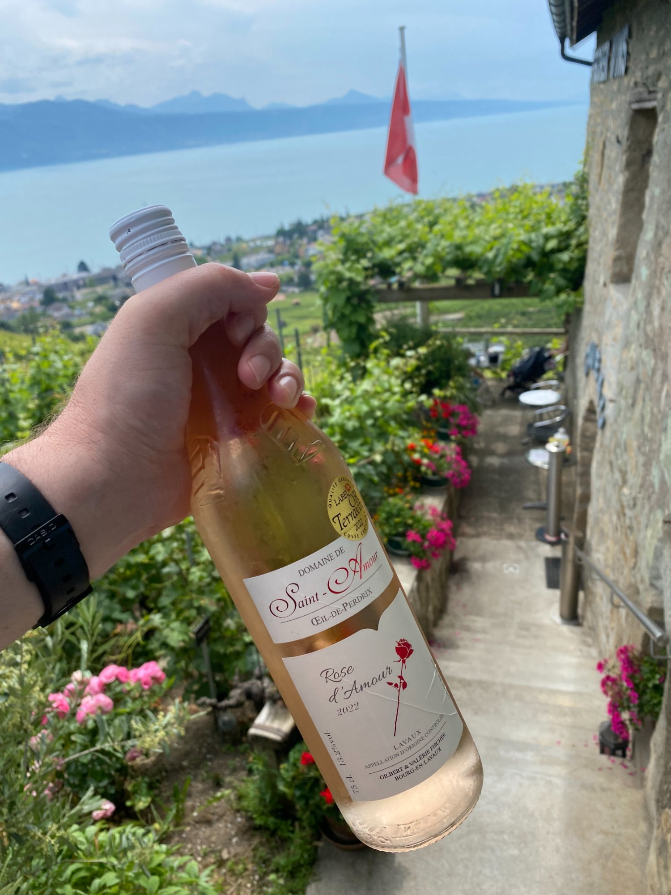
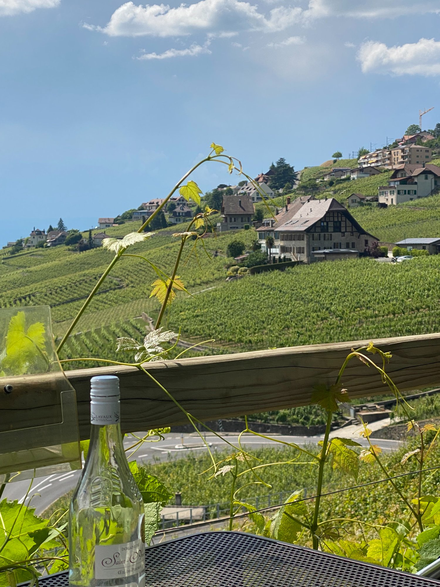
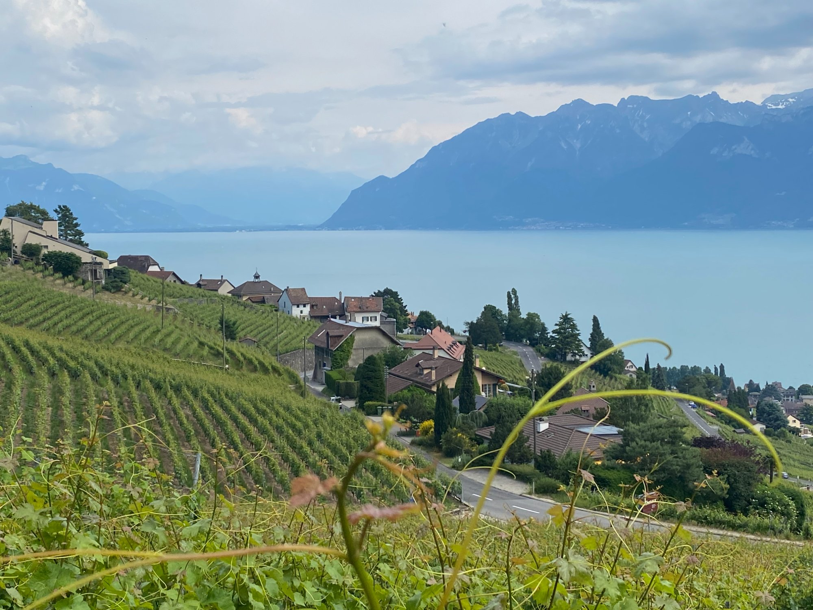
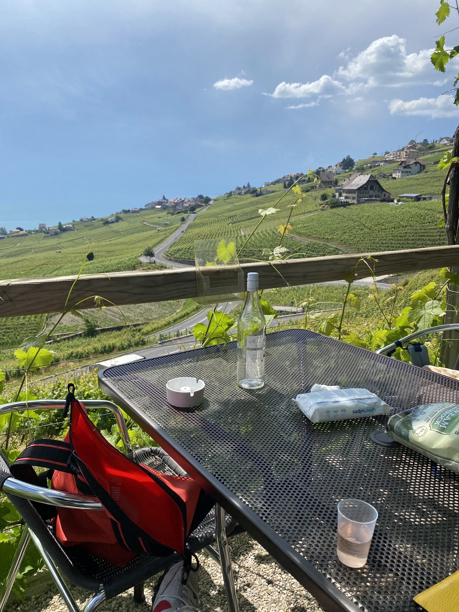
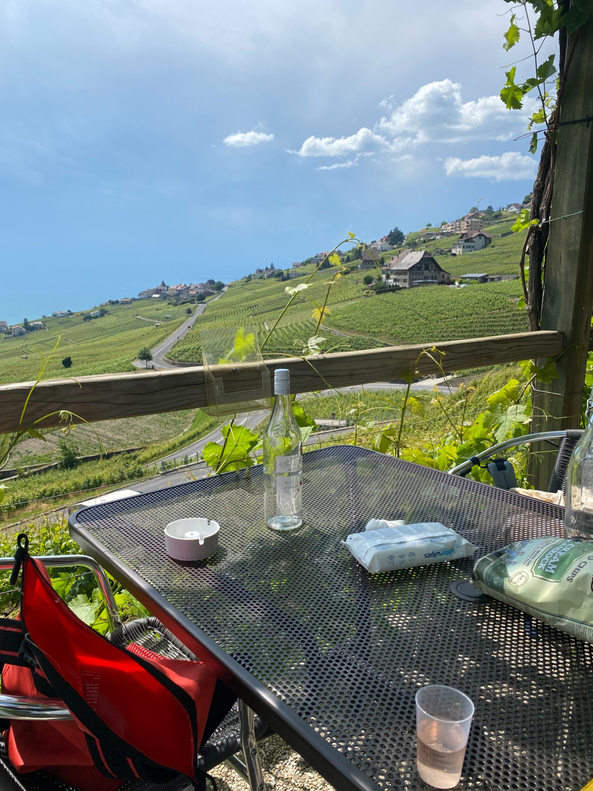
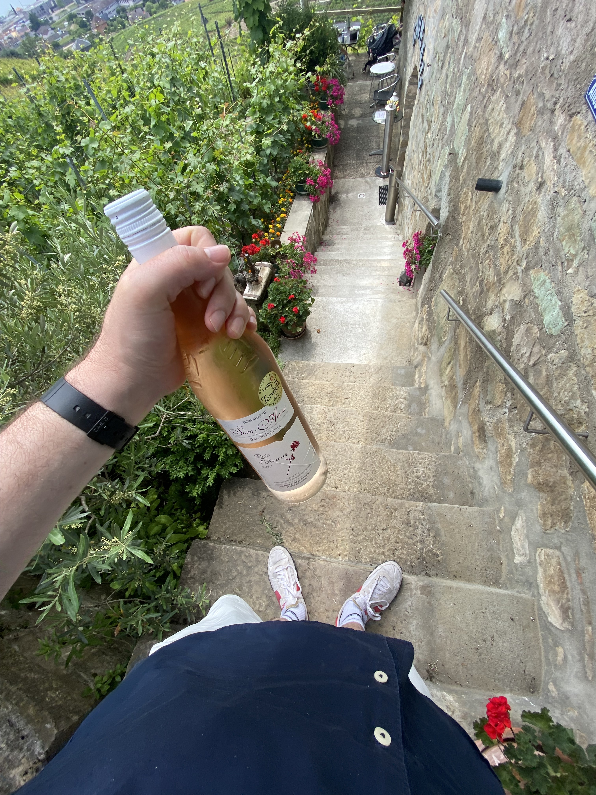
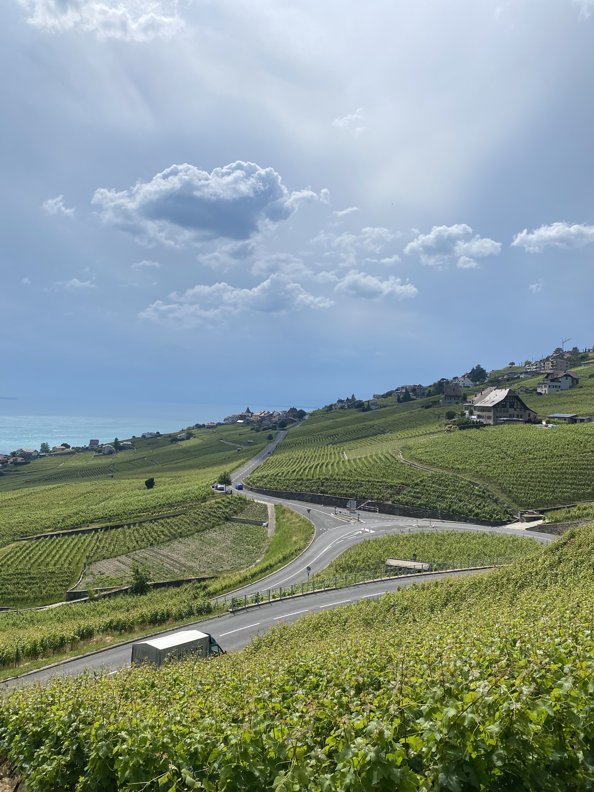
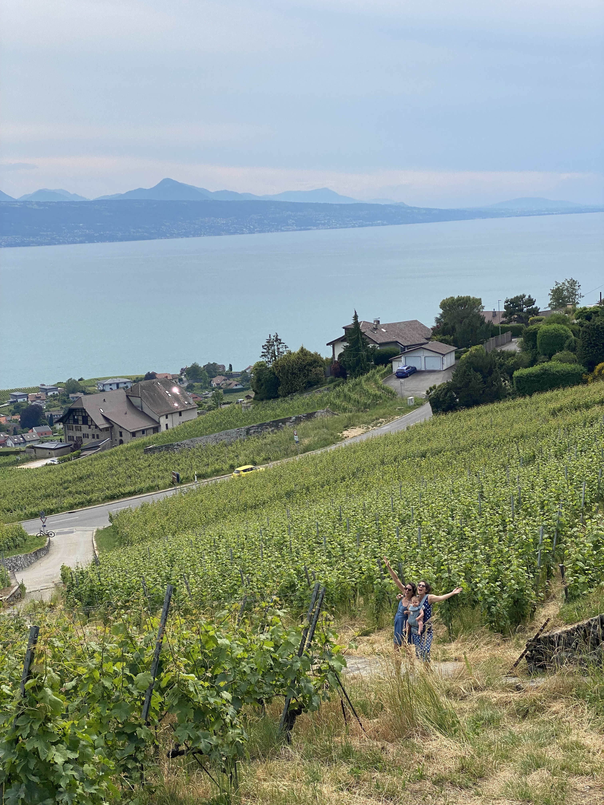
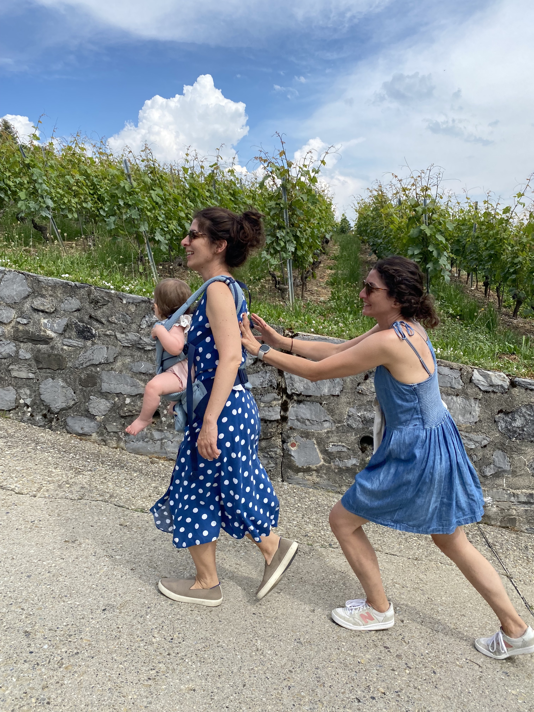

The place
Lavaux is one of the most beautiful wine regions in the world. UNESCO-listed since 2007, it's a continuous belt of steep terraced vineyards running along the north shore of Lake Geneva between Lausanne and Montreux — vines dropping straight down to the water with the French Alps filling the horizon across the lake. The terraces were first cultivated by Benedictine and Cistercian monks in the 11th and 12th centuries. They've been producing wine here ever since.
You can just come and walk around. But in the spirit of HoodTip, here is a specific destination: Domaine Saint-Amour.


The Rosé d'Amour, Œil-de-Perdrix. Gilbert & Valérie Fischer, Bourg-en-Lavaux.
The tip
I went on a Sunday and the domaine was closed — but that's actually the better version, because it becomes the honour system. There's a small fridge full of cold rosé made from the grapes immediately surrounding you. Bring cash. Leave it in the box. Take a bottle. Go downstairs to the terrace and have a picnic.
The wine is the Rosé d'Amour, an Œil-de-Perdrix — the classic Swiss pale rosé style made from Pinot Noir. It's cold, it's good, it costs what things cost in Switzerland, and you are sitting inside the vineyard it came from. This is about as correct as wine drinking gets.
"Leave cash in the box. Take a bottle. Sit on the patio with the lake below you and the Alps across the water. An A+ way to spend an afternoon."
— Dave

The view. Lake Geneva. The Alps across the water. You are sitting in those vines.
The terrace
The terrace is downstairs from the small cave building — stone walls, vines growing overhead on a pergola, metal café tables, the vineyard dropping away in front of you with the lake at the bottom. Bring food. Stay as long as you want. Nobody is going to rush you.

The terrace. Stone cave. Vine pergola. Bring a picnic.

The table. The vineyard. An empty bottle is a good sign.
The view

The stone steps down from the cave to the terrace. The flowers are always there.

The road through Lavaux. Walk down, walk back up. It's worth it.
Not sure exactly how it works when they're open on weekdays — probably you hand the cash to a person instead of the box. Either way, this is a good destination if you want to visit Lavaux but don't know exactly where to go. The train from Geneva gets you to Cully or Rivaz and you walk from there. No car needed. Turn up. Find the fridge. Sit in the vines.


The cave entrance. And the walk between the vines.